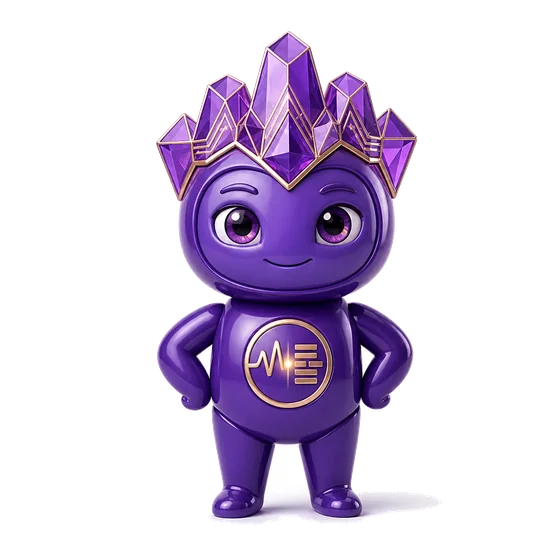
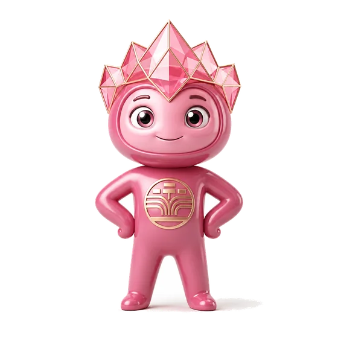
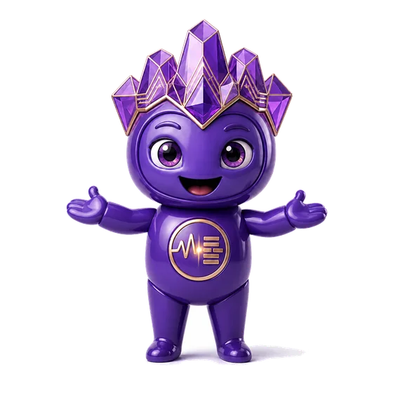
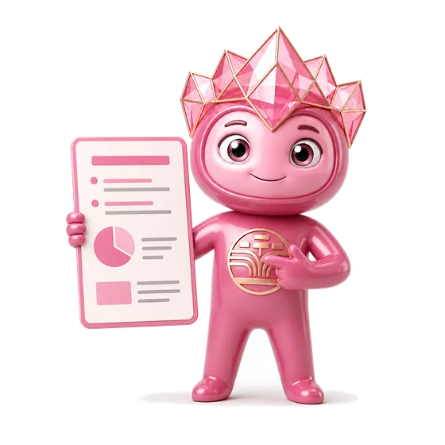

رفيقك الذكي لفهم دروسك، لا لحفظها
برّاق يحوّل محاضراتك وملفاتك ومقاطعك الصوتية إلى ملخص موثوق، اختبار مبني على محتواك فعلًا، وخطة مراجعة تناسب وقتك — بخمس شخصيات ذكاء اصطناعي تعمل معًا لأجلك.


من الفوضى إلى الفهم في 4 خطوات
لا حفظ عشوائي ولا تصفح بلا هدف. أربع خطوات بسيطة تحوّل أي محتوى دراسي إلى مسار واضح.
ارفع محتواك
نص، ملف محاضرة، أو تسجيل صوتي — كما هو، بدون تنسيق مسبق.
تعمل الشخصيات الخمس
كل شخصية تحلل المحتوى من زاويتها: تلخيص، تحويل صوت، تخطيط، تقييم.
تحصل على النتيجة
ملخص منظم، اختبار مبني على محتواك فعلًا، وخطة مراجعة واقعية.
رشيد يتابع تقدمك
تحليل مستمر لأدائك، ونقاط ضعف محددة بدقة لتركّز عليها لاحقًا.
خمس شخصيات، محرك واحد لكل مهارة دراسية
كل شخصية لها لون، دور، وأسلوب مختلف — لكنها تعمل كفريق واحد متماسك. مرّر الفأرة أو المس البطاقة لتراها في لحظة عملها.
يولّد اختبارات من محتواك فعليًا، يقيس فهمك، ويحدد نقاط قوتك وضعفك بدقة.
"أعرف نقاط قوتك، وأثبتها لك بالأرقام."
يبني خطة يومية وأسبوعية متوازنة حسب وقتك المتاح وصعوبة المادة.
"خطوة اليوم أوضح من فوضى الأسبوع كله."
يتابع تقدمك عبر الوقت، ويقترح ما يستحق تركيزك التالي فعليًا.
"الأرقام تتكلم، وأنا أترجم لك ما تقوله."

يحوّل محاضراتك الصوتية إلى نص منظم وقابل للمراجعة السريعة.
"قل ما تسمعه، أُعيده لك كلمات منظمة."

يبسّط المحاضرات الطويلة إلى نقاط واضحة أو بطاقات مراجعة سريعة.
"من عشر صفحات، إلى الفكرة الواحدة التي تحتاجها."
جرّب صدى — قريبًا
خدمة تحويل الصوت إلى نص مباشرة من المتصفح لم تُفعَّل بعد على هذا الموقع، لأننا لا نطلق ميزات لم تكتمل اختباراتها. سنضيفها هنا فور جاهزيتها فعليًا.
قريبًاأي شخصية من برّاق تشبهك؟
ثلاثة أسئلة سريعة، ونخبرك أي محرك من برّاق يناسب أسلوبك في الدراسة.
١. متى تشعر بأقصى إنتاجية في الدراسة؟
٢. ما أكبر تحدٍ يواجهك في الدراسة؟
٣. ما الذي يريحك أكثر أثناء المراجعة؟
الميزات، بترتيب رحلتك الدراسية
من لحظة رفع المحتوى إلى لحظة معرفة نتيجتك — كل ميزة تسدّ فجوة حقيقية في تجربة الطالب العربي.
التلخيص الذكيخُلاصة
تلخيص المحاضرات والملفات والنصوص الطويلة، مع اختيار الطول ونوع التلخيص، وتحويل النتيجة إلى بطاقات مراجعة.
اختبارات تفاعلية من محتواكفاحص
توليد اختبارات مبنية فعليًا على ما رفعته، مع تحليل إجاباتك وتحديد نقاط القوة والضعف بدقة.
تحويل الصوت إلى نص منظمصدى
رفع أو تسجيل محاضرة صوتية والحصول على نص منسّق قابل للمراجعة السريعة بدل إعادة الاستماع الكامل.
تخطيط دراسي ذكيخُطى
خطة يومية وأسبوعية متوازنة تُبنى حسب وقتك المتاح وصعوبة كل مادة، لا خطة عامة جاهزة.
تحليل أداء وتوصيات عمليةرشيد
تتبع تقدمك عبر الزمن، وتوصيات أسبوعية بما يستحق تركيزك التالي فعليًا.
نظام باقات ورصيد مرنالمنصّة
تحكّم بالاستخدام عبر رصيد وباقات بدل اشتراك جامد، حتى يبقى برّاق متاحًا لكل مستوى استخدام.
تجربة مستقرة من خلف الكواليسالمنصّة
إدارة ومراقبة مستمرة للاستخدام والخدمات، حتى تبقى تجربتك الدراسية مستقرة وموثوقة.
لغة عربية أصيلة، لا ترجمة لاحقةالمنصّة
تجربة ودعم RTL مصمَّمان من الأساس للطالب العربي، من المحتوى إلى التحليل.
أسئلة يطرحها كل طالب قبل الانضمام
إجابات مباشرة وصادقة، بلا مبالغة في الوعود.
متى يمكنني تجربة برّاق فعليًا؟
نطلق تدريجيًا عبر قائمة الانتظار أولًا. لا يوجد تاريخ إطلاق ثابت بعد، لأننا لا نطلق للجمهور قبل اكتمال اختبار شامل لكل الخدمات خلف الكواليس.
كم سعر برّاق؟ هل هو اشتراك شهري؟
برّاق يعتمد نظام رصيد وباقات مرنة بدل اشتراك جامد ثابت، بحيث تدفع فعليًا حسب استخدامك. تفاصيل الأسعار الدقيقة تُعلن عند فتح التجربة الأولى.
هل يعمل برّاق بدون اتصال بالإنترنت؟
لا. التلخيص والاختبارات وتحليل الأداء تعتمد على معالجة ذكاء اصطناعي تتم على الخادم، لذا يحتاج برّاق اتصالًا بالإنترنت ليعمل.
ما الذي يجمعه برّاق من بياناتي، وهل هي خاصة؟
حاليًا نجمع فقط الاسم والبريد الإلكتروني عبر نموذج قائمة الانتظار، ولا نشاركهما مع أي طرف ثالث. التفاصيل الكاملة في سياسة الخصوصية.
لأي المراحل الدراسية صُمم برّاق؟
لطلاب الثانوية والجامعة تحديدًا — بمحتوى وتحليل وأسلوب مبني لهذه المرحلة الدراسية بالذات.
هل برّاق بالعربية فقط، أم يدعم الإنجليزية أيضًا؟
واجهة الموقع والتطبيق ثنائية اللغة (عربي/إنجليزي)، لكن برّاق مصمَّم أصلًا للطالب العربي أولًا، لا كترجمة لاحقة عن نسخة إنجليزية.
عن برّاق
برّاق شركة ناشئة تعليمية بدعم من فريق الشباب للابتكار، انطلقت من ملاحظة بسيطة: الطالب العربي يستحق أدوات ذكاء اصطناعي مبنية لغته وسياقه من الأساس، لا مُترجمة عنه لاحقًا.
نوثّق تقدمنا بصدق، بما في ذلك ما لم يكتمل بعد، لأننا نؤمن أن الشفافية تصنع منتجًا أفضل وأكثر موثوقية على المدى الطويل.
كن أول من يجرّب برّاق
اترك بريدك الإلكتروني وسنُعلمك فور فتح التجربة الأولى.
بريدك يُحفظ في قاعدة بيانات برّاق ليُستخدم فقط لإعلامك بإطلاق التجربة الأولى. راجع سياسة الخصوصية.